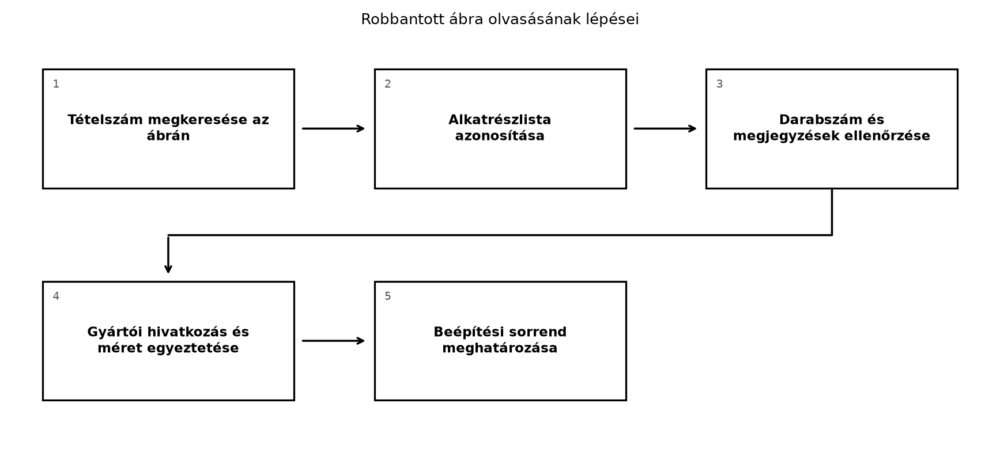

Javítási kézikönyvben vagy internetes katalógusban egy menetes alkatrészt keresel. A rajzon nem a csavar fényképe, hanem egyszerűsített, szabványos jelölés látható: vastag és vékony vonalak, pontvonalak, körök, nyílszimbólumok. Ha a jelet félreérted – például finommenetet hagyományosnak, balmenetet jobbmenetnek olvasod –, rossz alkatrészt rendelsz, a szerelés elakad, vagy a csavarkötés meghibásodik. Ugyanez igaz a csapágyakra, fogaskerekekre, rugókra és a hegesztési varratokra is: a rajz a gyártó és a szerelő közötti egyértelmű nyelv.
Ebben az alfejezetben megtanulod felismerni a gépészeti rajzon használt jelképes ábrázolásokat, leolvasni a méreteket, és értelmezni a javítási kézikönyv összeállítási rajzait, robbantott ábráit.
Képzelj el egy gépészeti rajzot, amelyen egy tengely vége látható. A
tengely egyik szakaszán csavarmenet van: a tengelyvonal felett
vastag folytonos vonal jelöli a menet külső átmérőjét
(a csúcsok átmérőjét), közvetlenül alatta pedig vékony folytonos
vonal fut a menet magátmérőjének (a menetárok aljának)
megfelelő hosszúságban. A tengely végén az elölnézetben egy kör látható:
a külső kör vastag, a belső kör vékony, és a belső kör körülbelül
háromnegyed körívet alkot – ez a menet elölnézeti
szimbóluma. A rajz mellett a felirat: M10×1,25-6g
(ellenőrizendő: ISO 965-1, ISO 6410). Ez azt jelenti: metrikus
finommenet, 10 mm névleges átmérő, 1,25 mm menetemelkedés, 6g
tűrésosztály (külső menet); a menethossz (pl. 20 mm) a rajzon külön
méret. Ha a jelölésben LH szerepel, a menet
balmenet.
Ez a kép jól mutatja a jelképes ábrázolás lényegét: nem a valóságos csavarvonalat rajzoljuk ki, hanem a szerkezeti jellemzőket kiemelő, szabványos jeleket.
Definíció. A jelképes ábrázolás olyan rajztechnikai módszer, amely a valós gépelem bonyolult, apró részleteit (menetek, fogazatok, csapágygolyók, rugómenetek) a műszaki rajzszabványok szerint egyszerűsített, megegyezéses jelekkel helyettesíti. A cél a rajz olvashatóságának megőrzése és az alkatrész funkciójának kiemelése.
Szabály. A jelképes ábrázolás nem a valóságos alkatrész fotórealisztikus rajza, hanem egy megegyezés szerinti nyelv. A rajzjeleket nem a rajzoló hangulatától függően, hanem a vonatkozó szabványok (például az MSZ EN ISO 6410 menetekre, az MSZ EN ISO 2203 fogaskerekekre, az MSZ EN ISO 2553 hegesztési varratokra – ellenőrizendő: pontos szabványszámok) szerint kell értelmezni.
Összefüggés. A rajzon megadott méret vagy jelölés
akkor bírálható el, ha ismerjük a jelölést alkotó elemek jelentését.
Például egy metrikus menet jelölésében: - M = metrikus
ISO-menetes (metrikus normál menet) - 10 = névleges átmérő
(a menet külső átmérője) milliméterben - ×1,25 =
menetemelkedés milliméterben (csak finommenetnél; normál menetnél
elhagyható) - LH = balmenet (left hand) – ha nincs megadva,
a menet jobbmenet - a kötőjel utáni jel (pl. 6g külső,
6H belső menetnél) a tűrésosztály; a menethosszt külön
méretként adjuk meg.
Megjegyzés. A csavar megnevezésében (pl. „hatlapfejű csavar M10 × 40”) a × utáni szám a csavar hossza, a menetjelölésben (M10 × 1,25) a menetemelkedés – a környezetből kell eldönteni.
Továbbvitt eredmény. A menetek, fogazatok, csapágyak és varratok jelképes ábrázolásának ismeretét használjuk a Hidraulikus, pneumatikus és gépjárműrendszer-rajzok olvasása alfejezetben a kapcsolási rajzok értelmezésekor, valamint a Kötőgépelemek: csavarok, szegecsek, csapszegek, reteszek és biztosítások alfejezetben a tényleges csavarkötések és biztosítások kiválasztásakor.
A csavarmenet a gépjárművekben az egyik leggyakoribb kötőelem. A rajzokon a menet valódi csavarvonalát nem rajzoljuk meg, mert az túlságosan sűrű, apró vonalakat eredményezne. Helyette a következő szabályokat alkalmazzuk:
Szabály. Menetes orsón (külső menet) a menet csúcsától mért külső átmérőt vastag folytonos vonallal, a menetárok aljának megfelelő magátmérőt vékony folytonos vonallal rajzoljuk. A menet végét a tengely teljes metszeténél vastag, a tengelyre merőleges vonallal jelöljük. Elölnézetben a magátmérő köre vékony, és általában háromnegyed kör. A menetes furat (belső menet) metszetben a külső átmérőt vékony, a magátmérőt vastag vonallal jelöljük; elölnézetben a helyzet fordított: a külső átmérő vékony kör, a magátmérő vastag kör (ellenőrizendő: a vonatkozó szabvány pontos előírása).
Példa. M8 normál metrikus menetet
jelöl, a menetemelkedés nincs kiírva, mert a szabvány szerinti normál
menetemelkedés tartozik hozzá (például M8-nál 1,25 mm – ellenőrizendő a
szabvány táblázatából). M8×1 finommenet, ahol a
menetemelkedés 1 mm. M8×1 LH balmenet.
A méretmegadás gyakorlati alakja: a menet külső átmérője elé az
M betűt írjuk, majd a menetemelkedést, ha szükséges, és a
menethosszt külön méretként adjuk meg. A rajzon a menethosszt a menet
végét jelölő vonaltól mérik.
Hatlapfejű csavar és anya. A hatlapfejű csavar
(például M10×40 – hossz 40 mm) rajzán a fej hatszögét
egyszerűsítve ábrázoljuk: oldalnézetben a fej kontúrja két-két
párhuzamos, ferde él, elölnézetben szabályos hatszög, benne a letörés
körével. Az anya hasonlóan jelenik meg, de nem rendelkezik szárral. A
csavar teljes hosszát a fej alsó síkjától a szár végéig mérik.
Menetes furatok. A menetes furat metszetén a furat mélységét a fúrt rész és a menetes rész külön-külön jelzik. A menetes rész hosszát a menet jeléhez tartozó méret mutatja, a fúrt rész végét a fúró csúcsának megfelelő kúpos végét vastag vonallal rajzolják. Az átmenő menetes furat esetén a furat mindkét nyílása látható.
A fogaskerekek, fogaslécek és csigahajtások fogainak profilját a műszaki rajzokon nem rajzoljuk meg fogról fogra, mert az túl aprólékos lenne. Ehelyett a fogak jelentős köreit jelképes vonalakkal adjuk meg.
Szabály. Homlok fogaskeréken a fejkört (a fogak csúcsai által meghatározott kört) vastag folytonos vonallal, az osztókört (a fogak elméleti középvonala) vékony pontvonallal, a lábkört vékony folytonos vonallal ábrázoljuk. A fogprofilokat nem rajzoljuk meg a teljes kerületen. A fogazat jelölésére gyakran a fogas koszorú annyi részét mutatják, amennyi a profil azonosításához szükséges (pl. 1–2 fog).
Összefüggés. A fogaskerék legfontosabb mérete a modul , amely a fogak nagyságát jellemzi. A modul, a fogszám és az osztókör átmérője közötti kapcsolat:
A kapcsolódó fogaskerekek modulja mindig azonos, különben a hajtás nem működne.
Kinematikai rajzjelek. A kinematikai vázlatokon (olyan egyszerűsített rajzokon, amelyek csak a mozgásátvitel lényegét mutatják) a fogaskerekeket gyakran két párhuzamos vonal jelzi a kerék helyén; a hajtó és hajtott fogaskerék kapcsolódását a két egyenes érintkezésével, vagy egy kis téglalappal ábrázolják. A homlok-, kúp- és csigahajtásokat eltérő szimbólumokkal különböztetik meg (például kúpkeréknél a jelek ferde vonalakkal találkoznak, csigahajtásnál egy csiga és egy kerék jelét kombinálják – ellenőrizendő: a pontos kinematikai rajzjelek a vonatkozó szabványban).
Fogasléc. A fogasléc fogazatát oldalnézetben a fogak profilját több fogon kirajzolva mutatják, a fogakat a kapcsolódó fogaskerék fogainak megfelelően ábrázolják. Fogaslécnél az osztóvonal egyenes.
Bordás tengelykötés. A bordás (hornyolt)
tengelykötés a nyomatékátvitelt szolgálja. A rajzokon a bordákat a
tengely hosszmetszetén párhuzamos vonalak jelzik, az
elölnézetben a bordák szimmetrikus elrendezésű, rövid vastag vonalak. A
bordák számát, átmérőjét és illesztését táblázatban vagy feliratban
adják meg, például 6×23×26 (6 borda, belső átmérő 23 mm,
külső átmérő 26 mm – ellenőrizendő: a pontos méretmegadási forma).
Csapágyak. A gördülőcsapágy rajzjelén a
csapágygyűrűket körök jelölik. Egysoros golyóscsapágy
elölnézetben: egy külső vastag kör, egy belső vastag kör, és a kettő
között egy kis kör (a golyó). A metszeti rajzon a
golyók körlapjai látszanak a futópályák között. A kúpgörgős csapágy
rajzjelén a görgők ferde vonalakkal jelöltek. A csapágy méretjelölését
(pl. 6204, 6305) a csapágygyártó katalógusa
szerint kell értelmezni (ellenőrizendő a tényleges csapágykatalógus
adatainak használata).
Rugók. A nyomó csavarrugó rajzán a rugó meneteit egy-két menet jelképezi, a többi menetet csak a szélső kontúrral és a menetemelkedésre utaló vonallal egészítik ki. A méretmegadás tartalmazza a huzalátmérőt, a belső vagy külső átmérőt, a terheletlen hosszt , a menetszámot, és a rugókarakterisztika szempontjából fontos rugóállandót. Húzórugónál a végek kampóit, torziós rugónál a karokat rajzolják jelképesen. A laprugó oldalnézetben egy íves lemez, a spirálrugó elölnézetben spirálvonalakkal jelölhető.
A hegesztett kötések rajzain a varratok valódi alakját elvileg nem kell kirajzolni, hanem a szabványos nyílszimbólummal adjuk meg. A nyíl a varrat helyére mutat, és a jelölés tartalmazza a varrat típusát, méretét és hosszát.
Szabály. A hegesztési varrat jelölésénél egy nyíl mutat a varrat vonalára, a nyílvonal mellett egy – a varrat típusát jelző – ábra látható. Például a tompavarratok jele a varrat keresztmetszetére utal (I, V, Y, U alak); a sarokvarrat jele egy kis derékszögű háromszög. A nyílvonal végén a zászló a helyszíni varratot, a kör a körülvarrást jelenti. A sarokvarrat méreteként az a a varratvastagságot (a beírható háromszög magasságát), a z a szárhosszt jelöli (); utána a varrat hosszát adják meg (ellenőrizendő: ISO 2553). A varrat helyzetét (pl. folyamatos, szaggatott, körülvarrt) külön jelölés mutatja.
Forrasztott kötések esetén hasonló nyílszimbólumot
használnak, de a varratot a forraszanyag jelenléte miatt gyakran
vékony vonallal és a nyíl mellett a forraszanyag
jelölésével (pl. Sn-Pb) tüntetik fel (ellenőrizendő: a
pontos jelölés a vonatkozó szabvány szerint).
Táblázat a leggyakoribb jelképes ábrázolások áttekintéséhez:
| Alkatrész | Jelképes ábrázolás (szöveges leírás) | Jellemző méretmegadás | Megjegyzés |
|---|---|---|---|
| Külső menet | Vastag és vékony folytonos vonal; elölnézetben 3/4 kör | M10, M12×1,25, LH | Normál menetnél az emelkedés elmarad |
| Belső menet | Metszetben vastag/vékony vonal felcserélve az orsóhoz képest | M8, M10×1 | Furathossz és menethossz külön |
| Homlok fogaskerék | Fejköre vastag, osztóköre pontvonal, lábköre vékony | m, z, d | Kapcsolódó modul azonos |
| Gördülőcsapágy | Körök; metszetben golyók; kúpgörgősnél ferde vonal | 6204, 6305 stb. | Gyártói katalógus jelölése |
| Nyomó rugó | Egy-két menet; , huzalátmérő, menetszám | d, D, n, c | Rugóállandó jellemző |
| Hegesztett varrat | Nyílszimbólum; tompa- és sarokvarrat jele | a, l, varrattípus | MSZ EN ISO 2553 szerint |
Az értékek tanulási példák (ellenőrizendő: gyártói adat / hatályos előírás).
A javítási kézikönyvek gyakran használnak összeállítási rajzot (a szerkezet összeszerelt állapotát metszetben vagy vetületben) és robbantott ábrát (robbantott, széthúzott nézet, ahol az alkatrészek a beépítési sorrendben elkülönülnek). E rajzok értelmezése a szerelő számára napi feladat.
Ábra. Az alábbi folyamatábra a robbantott ábra olvasásának lépéseit szemlélteti.

Az ábra lépései: először az ábrán található tételszámot (gyakran egy bekarikázott szám) keressük meg, majd az összeállítási rajzhoz tartozó alkatrészlistában azonosítjuk az alkatrészt. A lista tartalmazza a darabszámot és a megjegyzéseket (pl. „csak egyszer használatos”). Ezután a gyártói hivatkozást (cikkszámot) és a méreteket egyeztetjük a konkrét jármű adataival. Végül a robbantott ábra alapján meghatározzuk a szét- és összeszerelés sorrendjét.
Az alábbi ábra egy csapágyazott tengely robbantott rajzát mutatja nyolc bekarikázott tételszámmal és a hozzá tartozó darabjegyzékkel. A beépítési sorrend: ② távtartó gyűrű, ③ a 6207 csapágy egy egységként (a sajtolóerő a belső gyűrűre hat), ④ rögzítőgyűrű, majd a tengely a ⑧ házba, ⑤ a tömítőgyűrű a ⑥ fedélbe, a fedél a házra, végül a ⑦ csavarok. A HTML-kiadásban az összeszerelés lépésenként lejátszható, és a darabjegyzék gombjaira mutatva a tétel kiemelődik.
A jelképes ábrázolásokat egymás mellett mutatja a következő ábra: (1) M12×1,5 külső menet oldal- és elölnézete (vékony háromnegyed kör a magátmérőn) és menetes zsákfurat metszete; (2) homlok fogaskerék , fej-, osztó- és lábkörrel (Ø44, Ø40, Ø35); (3) 6207 golyóscsapágy egyszerűsített és részletes metszete; (4) sarokvarrat jele („a4”, 100 mm) és helyszíni V-varrat jele zászlóval; (5) nyomó- és húzórugó egyszerűsített rajza. A HTML-kiadásban panelenként válthatunk a valódi alak és a jelképes ábrázolás között, és a vonalakra mutatva megjelenik a jelentésük.
1. példa – Menetméret leolvasása. Egy csavar rajzán
szerepel: M12×1,5-6g, mellette a menethossz külön
méretként: 30 mm. Keresett: a menet jellemzői. Megoldás:
M12 metrikus menet, névleges átmérő 12 mm;
×1,5 menetemelkedés 1,5 mm, tehát finommenet;
6g a külső menet tűrésosztálya; a 30 a rajzon
külön megadott menethossz milliméterben. Ha a jelölésben LH
is szerepelne, balmenet lenne.
2. példa – Fogaskerék méretezése. Adott: fogaskerék fogszáma , modul . Keresett: az osztókör átmérője . Összefüggés: . Behelyettesítés: . Az eredményt ellenőrizzük: 40 mm reális osztókör-átmérő egy 20 fogú, 2 mm modulú fogaskerékhez. A fejkör jellemzően az osztókörtől kb. -mel nagyobb sugárral van kint, tehát a fejkör átmérője körülbelül 44 mm (ellenőrizendő: a pontos fejmódosulat a szabványos fogprofil szerint).
A rajz olvasásakor ellenőrizni kell:
Előírás. A rajzjelek értelmezésekor mindig a vonatkozó szabvány (pl. MSZ EN ISO 6410, MSZ EN ISO 2203, MSZ EN ISO 2553 – ellenőrizendő: aktuális szabványszámok) és a gyártói javítási kézikönyv adatai a mérvadók.
Egy műhelyben a szerelő féltengely csapágyat cserél. A javítási
kézikönyv robbantott ábráján a csapágy tételszáma 25. Az alkatrészlista
szerint a csapágy mérete 6207 (35 mm belső, 72 mm külső, 17
mm szélesség – ellenőrizendő a gyártói katalógus alapján). A szerelő a
robbantott ábráról leolvassa a beépítési sorrendet (pl. távtartó gyűrű –
csapágy – rögzítőgyűrű/biztosítólemez). A 6207 csapágy egy egységként
kerül fel: tengelyre szereléskor a sajtolóerőt a belső gyűrűre felfekvő
szerelőcsővel (vagy présen) adja át; ha házba szereli, a külső gyűrűre.
A gördülőelemeken át a szerelőerőt soha nem visszük át, hogy a
futópályák ne sérüljenek (ellenőrizendő: gyártói javítási utasítás,
esetleg melegítéses szerelés). A rajzjelek ismerete nélkül a csapágy
azonosítása és a szerelési sorrend is hibás lenne.
Balmenet és jobbmenet felcserélése. A rajzon az
LH jelölés hiányát figyelmen kívül hagyva a szerelő
jobbmenetes alkatrészt rendel, majd nem érti, miért nem lehet
becsavarni. Helyes megoldás: a menetjelölést mindig teljesen olvassuk
le, és a menetirányt ellenőrizzük.
A finommenet és normál menet összekeverése. Az
M10×1,25 finommenet, de ha a szerelő normál
M10-et (emelkedés 1,5 mm – ellenőrizendő) használ, a csavar
nem illeszkedik. Helyes: a menetemelkedést mindig ellenőrizni.
A fogaskerék osztókör és fejkör összetévesztése. A rajzon az osztókört pontvonal jelöli, a fejkört vastag vonal. A modul meghatározásánál az osztókört kell használni, nem a fejkört.
A hegesztési varrat méretének figyelmen kívül
hagyása. A sarokvarrat a mérete helyett a varrat
hosszát nézik, vagy fordítva. A hibás méret a varrat teherbírását
csökkenti.
M8×1 LH jelölés?1. feladat (A). Írd le, mit jelent az
M12×1,25-6g jelölés, ha a menethossz külön méretként 25
mm.
2. feladat (A). Rajzold le (szövegesen írd le) egy homlok fogaskerék jelképes ábrázolását: add meg, melyik kört melyik vonal jelöli.
3. feladat (B). Egy tengelyen M10×1
finommenet van. A szerelő normál M10-es anyát próbál
felcsavarni. Tegyük fel, hogy a normál M10 menetemelkedése
1,5 mm (ellenőrizendő). Mi történik, és miért?
4. feladat (B). Egy fogaskerékpár hajtó kereke , modul . A hajtott kerék fogszáma . Számítsd ki mindkét kerék osztókör-átmérőjét, és indokold, miért lehet együttműködniük.
5. feladat (C). Egy összeállítási rajzon egy csapágy
jelölése 6005. A szerelőnek meg kell mondania, hogy ez a
csapágy MEGFELEL-e egy olyan tengelyhez, amelynek csapágyülése 25 mm
átmérőjű. (Tételezd fel, hogy a 6005 csapágy belső átmérője
25 mm – ellenőrizendő a katalógusban.) Mi a válasz?
6. feladat (D). Egy javítási kézikönyv robbantott ábráján két rugó szerepel: az egyik húzórugó, a másik nyomórugó. Mindkettő rajzán csak egy-két menet látható. Hogyan döntöd el, melyik melyik? (Az ábrán a végek alakja is látszik.)
Önellenőrzés – válaszok:
M8×1 LH: metrikus finommenet, névleges átmérő 8 mm,
menetemelkedés 1 mm, balmenet.Feladatok megoldása:
M12×1,25-6g: metrikus finommenet, névleges átmérő 12
mm, menetemelkedés 1,25 mm, 6g tűrésosztály (külső menet); a menethossz
külön méret, itt 25 mm. Balmenet nincs jelölve, tehát
jobbmenet.
Homlok fogaskerék jelképes ábrázolása: a fejkört vastag folytonos vonal, az osztókört vékony pontvonal, a lábkört vékony folytonos vonal jelöli. A fogprofilokat nem rajzolják ki.
A normál M10 anya menetemelkedése 1,5 mm, a
tengelyen 1 mm-es finommenet van. A menetemelkedések különbözők, ezért
az anya nem csavarható fel, vagy ha erőltetik, a menetek tönkremennek. A
szerelőnek M10×1 anyát kell használnia.
A hajtó kerék: . A hajtott kerék: . Együttműködhetnek, mert a moduljuk azonos ().
Ha a 6005 csapágy belső átmérője valóban 25 mm,
akkor megfelel a 25 mm-es tengelycsaphoz. (A szerelőnek ellenőriznie
kell a katalógusban a tényleges belső átmérőt; itt tanulási
példa.)
A rajzokon a rugók végei döntőek: a húzórugó végein kampók vannak, amelyek a húzóerő átadására szolgálnak; a nyomórugó végei síkra csiszolt, zárt menetek, amelyek a nyomóerőt adják át. Ha a rajzon a rugó végén nyitott kampó látszik, az húzórugó, ha sima, lapos vég, akkor nyomórugó.
A jelképes ábrázolás a műszaki rajzok szabványos nyelve, amely a
bonyolult gépelemeket egyszerűsített jelekkel mutatja. A csavarmeneteket
vastag és vékony folytonos vonalak jelölik; a menetméret megadása
tartalmazza a típust (M), az átmérőt, finommenetnél az
emelkedést, és balmenetnél az LH jelet. A hatlapfejű
csavart és anyát egyszerűsített hatszöggel, a menetes furatokat
metszetben ábrázoljuk. A fogaskerekeknél a fejkört vastag, az osztókört
pontvonal, a lábkört vékony vonal jelöli; az osztókör átmérője
.
A bordás tengelykötések, csapágyak és rugók is jelképesen jelennek meg.
A hegesztési varratokat nyílszimbólummal és varrattípus-jellel adjuk
meg. Továbbvitt eredmény: e jelek ismerete
nélkülözhetetlen a hidraulikus és pneumatikus kapcsolási rajzok (Hidraulikus, pneumatikus és gépjárműrendszer-rajzok
olvasása) olvasásához, valamint a kötőgépelemek (Kötőgépelemek: csavarok, szegecsek, csapszegek,
reteszek és biztosítások) tényleges kiválasztásához. A rajzokat
mindig a vonatkozó szabványok és a gyártói kézikönyv szerint
értelmezzük.
6005, 6204) ellenőrizendők.